Hạo Thiên Chùy (hao_thien_chuy, khung 128×128, phóng ×2) : xoay vòng hướng
← Trang đủ 8 hướng . Khung xoay qua 5 hướng vẽ thật: nếu se ≈ e thì hình gần như đứng yên giữa hai nhịp; n / ne phải quay lưng; thân luôn là dáng LPC (thân chỉ có 3 hàng, se / ne dùng hàng e ) nên chỉ phụ thể đổi góc.
đứng (idle, m) 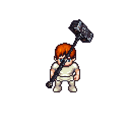
xoay vòng s→se→e→ne→n 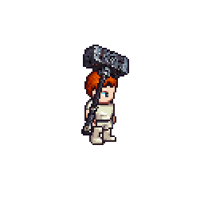
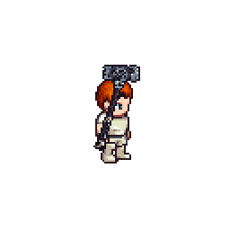
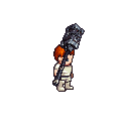
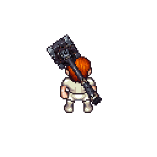
đi (walk, m) 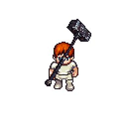
xoay vòng s→se→e→ne→n 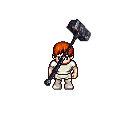
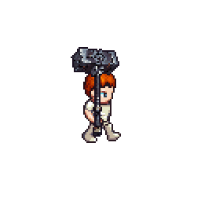
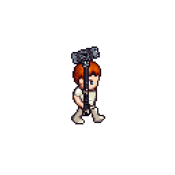
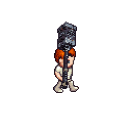
đánh (attack, m) 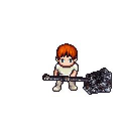
xoay vòng s→se→e→ne→n 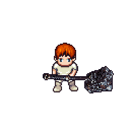
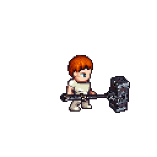
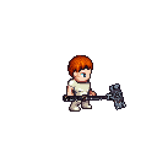
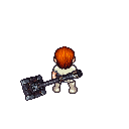
thi triển hồn kỹ (cast, m) 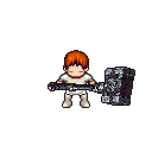
xoay vòng s→se→e→ne→n 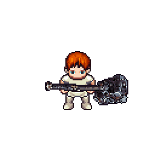
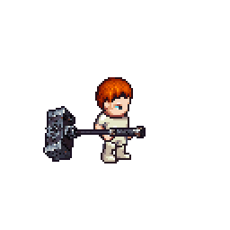
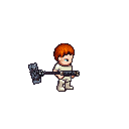
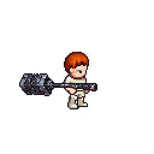
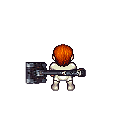
trúng đòn (hurt, m) xoay vòng s→se→e→ne→n 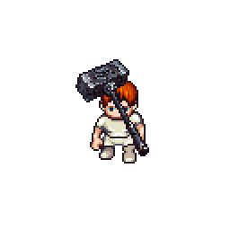
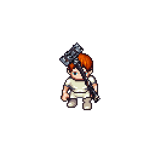
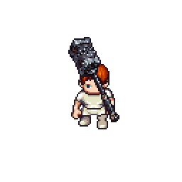
đứng (idle, f) 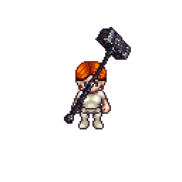
xoay vòng s→se→e→ne→n 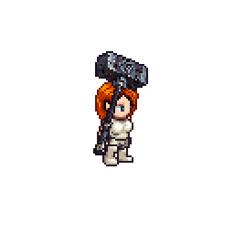
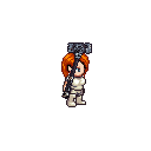
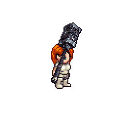
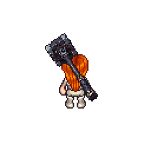
đi (walk, f) 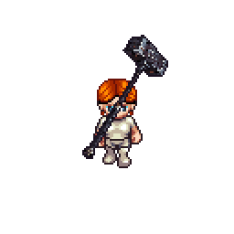
xoay vòng s→se→e→ne→n 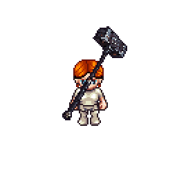
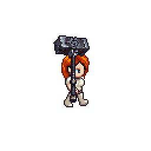
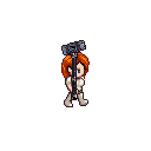
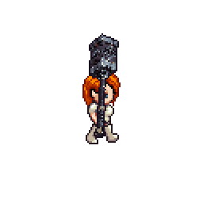
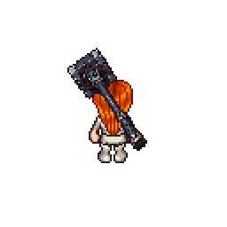
đánh (attack, f) 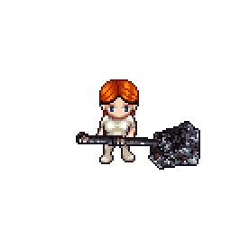
xoay vòng s→se→e→ne→n 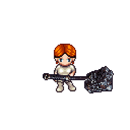
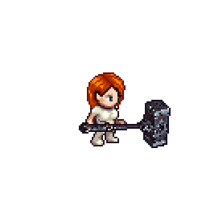
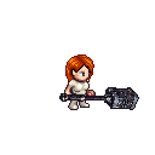
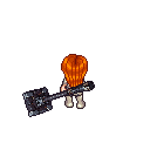
thi triển hồn kỹ (cast, f) 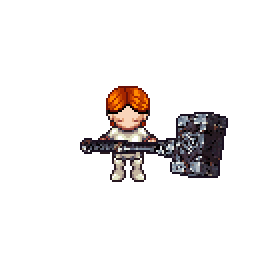
xoay vòng s→se→e→ne→n 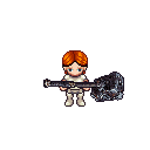
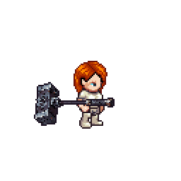
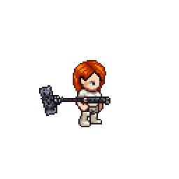
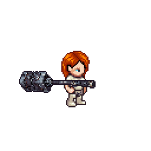
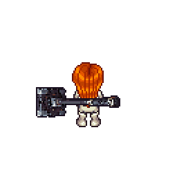
trúng đòn (hurt, f) xoay vòng s→se→e→ne→n 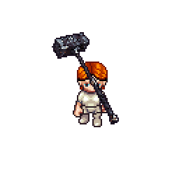
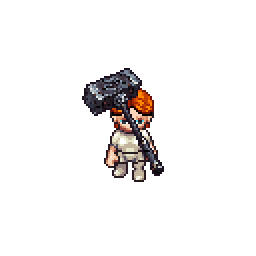
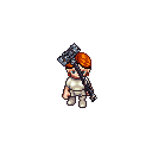
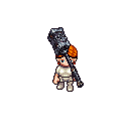